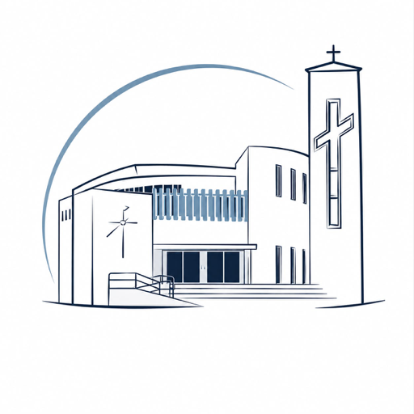

ADMINISTRACIÓN PARROQUIAL
Conecta con tu parroquia
No se pudo abrir el sistema. Revisa la conexión a internet e inténtalo de nuevo.
Primera apertura
Se necesita internet para iniciar sesión y preparar este equipo. Después, las ventas sin conexión estarán disponibles cuando el sistema indique que está preparado y tengas una caja abierta.
Las ventas pendientes que ya existan en este equipo se conservan.